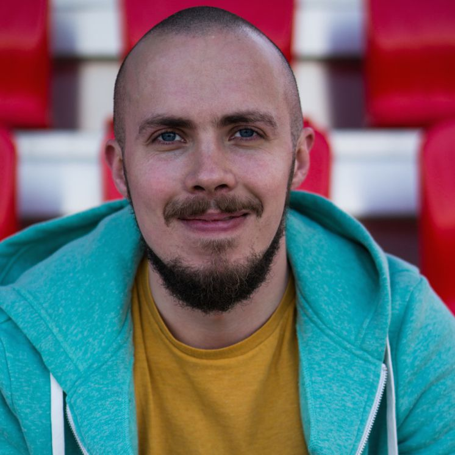
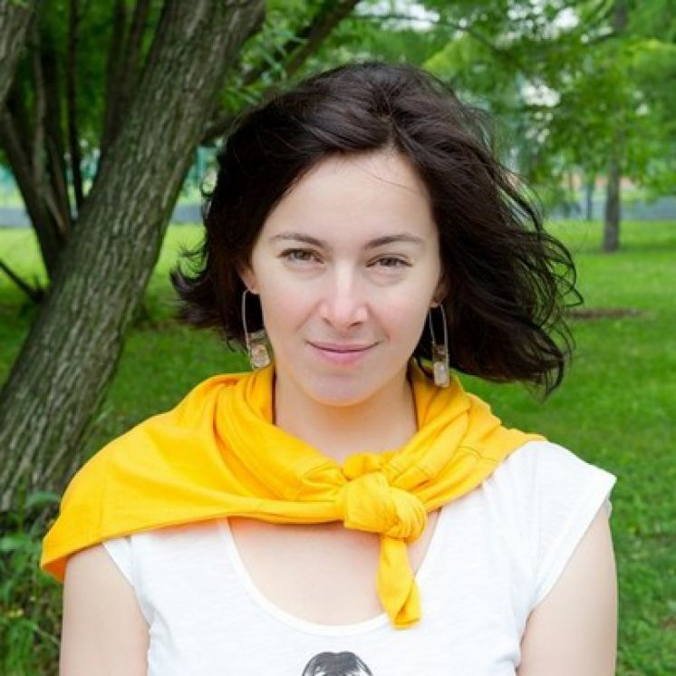
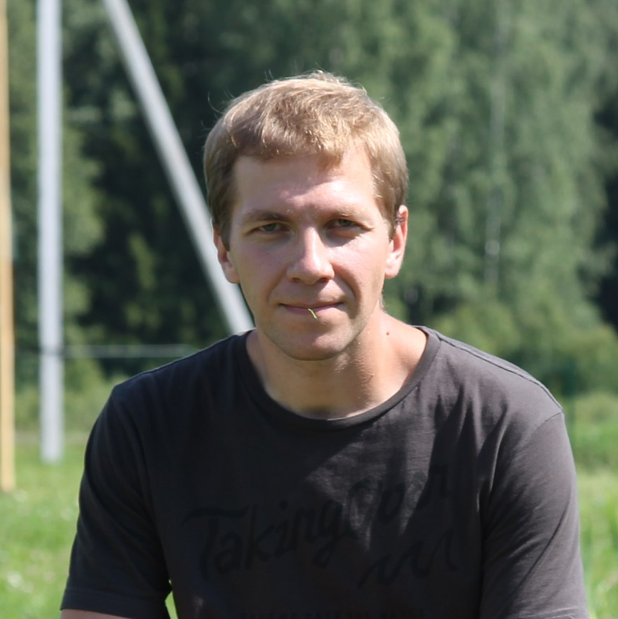
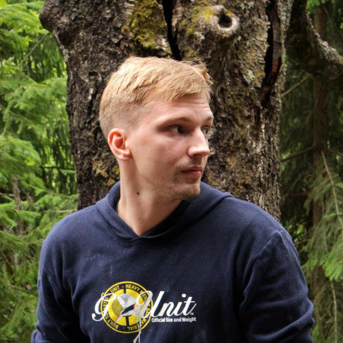
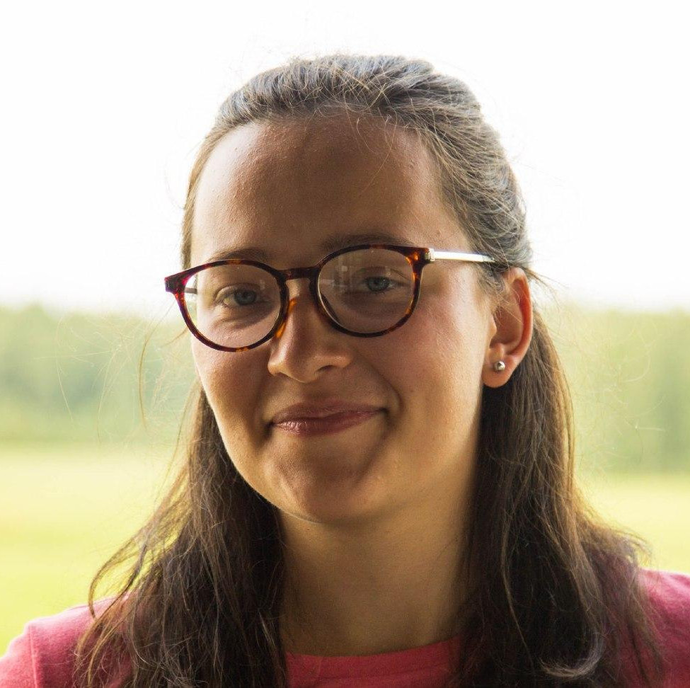
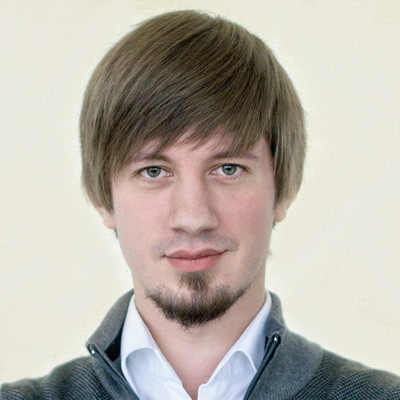

Выездная школа программирования и робототехники
|
Подача заявки
Школьники 7-11 класса
и студенты 1-2 курса
С проживанием - 30 т.р.
без проживания - 20 т.р.
Зачисление
и оплата
Любой желающий может принять участие в конкурсах GoTo Challenges и выиграть грант, частично или полностью покрывающий стоимость обучения. В рамках конкурса участникам необходимо реализовать до 18 октября один из предложенных проектов.
GoTo ChallengesПроживание организовано в Sweet Village. Хостел будет полностью занят участниками школы.
Проектная
деятельность

Лекции
и воркшопы

Единомышленники
и новые идеи

Эмоции и
общение
Встречи с
экспертами
Спорт и
игры
|
В рамках направления формируется 3 группы. В первой группе запланирован самый базовый курс из лекций и воркшопов, сопровождающихся заданиями из различных областей, в рамках которых ребята сделают 5-6 мини-проектов. Во второй группе ребят ждут несколько учебных проектов с погружением в мобильную и веб-разработку, базы данных, сети, анализ данных, применение алгоритмов. Участники, попавшие в старшую группу по результатам тестирования, все время посвятят реализации основного неучебного проекта в рамках задачи от компании-партнера или на основе своей идеи. Всех участников ждут как технологические мастер-классы, так и семинары по организации работы в проекте, формированию ТЗ и исследованию требований от пользователей, тестированию, а также ежедневная работа под руководством куратора. Участники направления будут разделены на 2 группы: опытные ребята возьмутся сразу за проекты от компаний или на основе своих идей, пройдут все стадии от идеи до реализации. Второй поток специально предназначен для новичков, которые получат базовые навыки и инструментарий: познакомятся с Arduino и средой разработки; научатся работать с различными датчиками, микросхемами, сервомоторами и объединять это все, чтобы получить умные устройства. Каждый участник направления получит к концу школы результат в виде прототипа или законченного устройства, а также пройдет серию мастер-классов по проектной работе, промдизайну и 3д-печати, интернету вещей. После отбора на данное направление все участники будут разделены на 2 группы. Первая займется изучением базовых методов машинного обучения, поработает с нейронными сетями, прорешает некоторое кол-во соревнований с Kaggle и реализует несколько классических учебных проектов по работе с текстами, картинками и временными рядами. Также освоят основные инструментарии и разберутся с математикой и статистикой, которые стоят за основными методами в этих областях. Вторая группа ребят, уже имеющих опыт реализации проектов по анализу данных, займется исследовательскими проектами на основе более продвинутых методов и последних статей и задачами от компаний. Биоинформатика – это стремительно развивающаяся область, точка смешения биологии, медицины, информатики и математики, целью которой является выявление новых биологических закономерностей алгоритмическими и статистическими методами. С развитием технологий появилась возможность исследовать весь геном организма в целом, определять уровни активности генов, исследовать их более сложные взаимодействия. Участники узнают об основных задачах биоинформатики, получат опыт работы с реальными данными, рассмотрят примеры современных исследований. К участию приглашаются все, кто хочет познакомиться с новой областью и попробовать силы в решении нестандартных междисциплинарных задач. Знание биологии не является обязательным в отличие от знания Python/R и наличия опыта прикладного программирования. Обычно прикладные программисты живут на среднем уровне абстракции: не зная, что происходит ниже их языка программирования, но и не уходя в абстракции выше функций или классов. Мы глубоко изучаем разные системы - от Arduino до компилятора - и крутим их как бублик в процессе. Самостоятельно решаем нетривиальные задачи, видим - и применяем математические паттерны везде. Попутно, в формате интермиссий, разбираем (на бублики) модные темы типа блокчейна или React. Увеличиваем отношение сигнал / шум через ФП. Семинарим, прогуливаясь и носим светодиоды в волосах. Изучаемые методы полезны как при прототипировании, так и при написании математически корректного софта для бортового компьютера самолёта. На направлении по блокчейну участники займутся написанием своего блокчейна с нуля на Haskell, узнают о верификации и статическом анализе контрактов, об архитектуре распределенных систем и продолжат расширять платформу GoToChain своими разработками. |
Робототехника |
Прикладное программирование |
Функциональное программирование |
Анализ данных |
Биоинформатика |
Блокчейн |
Преподаватели и гости

Алексей ПерепёлкинРуководитель направления робототехники GoTo и ЛИОТ МФТИ, автор онлайн-курса на Coursera "Строим роботов на Arduino", автор и судья номинации "Hello, Robot! Arduino" Робофеста, организатор Роболабораторий от КРОК. 
Иван БибиловРуководитель направления прикладного программирования GoTo, куратор образовательных программ Яндекса, преподаватель различных курсов в университетах и школы анализа данных Яндекса.

Надежда ЯнушкевичРуководитель направления поддержки и развития школьного IT-образования компании КРОК, специалист по корпоративной культуре, организатор соревнований, хакатонов и школ. 
Александр ПанинПреподаватель направления анализа данных в GoTo. Специалист в области машинного обучения, разработчик проектов CERN-Яндекс, преподаватель ФКН ВШЭ и школы анализа данных Яндекса, ЛЭШ. 
Алексей СаватеевДоктор физико-математических наук, профессор МФТИ. Работает ведущим научным сотрудником в РЭШ и ЦЭМИ. Занимается исследованиями в Яндексе. Александр ПетровПреподаватель направления анализа данных в GoTo. Специалист в области машинного обучения и рекомендательных систем, технический директор E-contenta, руководил R&D-отделом Data-Centric Alliance, работал в Tinkoff, Яндекс и Mail.Ru. 
Николай КутрухинПреподаватель направления робототехники в GoTo, специалист в области программной инженерии, координатор МКШ, руководитель робототехнических кружков.

Павел КуликовПреподаватель направления прикладного программирования в GoTo, инженер-программист с 10-летним стажем, full stack разработчик, фрилансер. 
Ростислав БородинПреподаватель направления прикладного программирования в GoTo и Политехническом музее. Выпускник ФКН НИУ ВШЭ, профессиональный full-stack веб-разработчик. Специалист по разработке медицинских сервисов. 
Ирина ЩукинаПреподаватель направления биоинформатики в GoTo. Выпускник матмеха СПбАУ. Исследователь в Оксфордском университете. Преподаватель в Институте Биоинформатики. 
Тимофей ПродановПреподаватель направления биоинформатики в GoTo. Выпускник матмеха СПбАУ. Исследователь в Центре Алгоритмической Биотехнологии СПбГУ, преподаватель в Институте Биоинформатики. 
Cергей AбдульмановГостевой лектор. Директор по маркетингу «Мосигра». Соучредитель бутикового рекламного агентства. Сергей достаточно часто пишет на Хабре о деятельности внутри Мосигры, участвует в разработке новых игр. 
Михаил ДиченкоПреподаватель направления робототехники в GoTo. Выпускник МГПУ, руководитель инженерного профиля школы ОРТ, преподаватель лицея 1535, руководитель робототехнических кружков в Москве. 
Алёна ИльинаПредприниматель, основатель школы GoTo, организатор TEDxSadovoeRing, серии научных школ по робототехнике и искусственному интеллекту RAIC для молодых специалистов и других образовательных проектов.

Михаил ФуниковAndroid-разработчик (Middle+) в e-Legion. Сфера профессиональных интересов —построение наиболее простой и гибкой архитектуры приложения. 
Александр ШаенкоРуководитель проекта «Маяк», первого российского спутника созданного руками энтузиастов космонавтики на средства, собранные методом краудфандинга. 
Сергей ЮдинПреподаватель направления анализа данных в GoTo. Аспирант МехМата МГУ, специалист в области машинного обучения и математической статистики. Работает аналитиком-разработчиком в Поиске Яндекса. 
Виктор ПетуховЗакончил магистратуру СПбПУ по направлению Биоинформатика. За время обучения проходил стажировку в Harvard Medical School. Специализируется в области статистиески и машинного обучения.

Анастасия Иванова-МосковскаяAспирант и сотрудник факультета журналистики МГУ им. М. В. Ломоносова, координатор школьного отделения мастерской "Школа "Наука и журналистка" проекта "Летняя школа".

Александр ВетушинскийПреподаватель философского факультета МГУ, сотрудник Moscow Game Center, ведет курс о прикладных аспектах game studies на факультете медиа, дизайна и коммуникаций в НИУ ВШЭ. |


Организаторы |
Партнёры |
Образовательный проект, посвященный проектной деятельности в различных высокотехнологических областях. Использование визуальных материалов только с согласия создателей проекта. Все права защищены.
Образовательный проект, посвященный проектной деятельности в различных высокотехнологических областях. Использование визуальных материалов только с согласия создателей проекта. Все права защищены.


Отзывы участников
Черемисина Анастасия
Лицей №2101, г. Москва
Приехав один раз в GoTo, ты не сможешь не поехать туда снова. Это место в котором ты можешь получить знания, необходимые для реализации своих идей и проектов, даже самых немыслимых, ты всегда можешь обсудить это с преподавателем и понять, с чего надо начать, чтобы проект был завершен. А еще GoTo это место где ты всегда найдешь интересных людей, море ламповости и тепла, уютные разговоры на свечках и чаепития. GoTo это место где ты можешь оставаться собой, совершенствоваться, это маленький мир, в котором хочется жить.
Александр Курылёв
Школа №1357, г. Москва
В GoTo большое количество времени отводится образованию. Чаще всего бывает по три-четыре пары за день. В это время можно либо заниматься заранее выбранным проектом, с которым тебе будут помогать преподаватели, либо учиться. На протяжении всех своих смен в лагере я реализовал 3 проекта по робототехнике, 1 учебный проект по анализу данных и несколько мини-проектов по программированию. Во всех сменах преподаватели уделяли должное внимание каждому из участников и помогали разбираться с той или иной проблемой. За одну-две недели реально подтянуть свои навыки в программировании или научиться всему с нуля.
Статкевич Глеб
Гимназия №5, г. Чебоксары
В апреле мне удалось побывать на занятиях весенней школы GoTo в Иннополисе. В самом городе я уже не первый раз, он великолепен, но особенно меня впечатлили занятия КМБ под руководством мастера Ростислава! Хочу выразить ему признательность и уважение за то, что в столь краткое время он, как истинный знаток своего дела, сумел запихнуть в наши черепные коробки массу полезной инфы и раскрутил наши 2-х ядерные процессоры до 4-х! Мне очень понравился стиль его обучения. Занятия были очень интенсивны и информативны! Собираюсь возобновить их летом!
Пушкарев Святослав
Гимназия №31, г. Курган
На каждой смене GoTo Camp представлено большое количество разнообразных направлений, а участие в обучении принимает большое количество IT специалистов. Образовательный процесс увлекателен, состоит из интересных лекций и реализации различных идей учеников лагеря. Каждый, приехав в этот лагерь увозит с собой не только полученные знания, но и "жизнеспособный" проект. В GoTo Camp я принимал участие в реализации "LinuxBot","SmartFluffyBrick" и "Определитель номеров". Два из них до сих пор развиваются, что является показателем профессионального подхода всей команды GoTo к обучению.
Екатерина Попкова
МГУ, г. Москва
Весення смена в лагере «GoTo» на специализации «биоинформатика» была для меня очень полезной и интересной. За неделю мы изучили и самостоятельно реализовали несколько базовых алгоритмов, применяющихся в биоинформатике: алгоритм Нидлмана-Вунша для выравнивания последовательностей, алгоритм восстановления вторичной структуры РНК, научились с помощью статистического теста выделять гены, изменяющие уровень экспрессии при данных условиях, относить человека к той или иной национальности исходя только из его генетического кода. ... Мне показалось особенно интересным, что после выполнения задания мы могли опробовать написанный алгоритм на реальных биологических данных. Параллельно мне удалось сделать проект по теме: «Оптимизация поиска сайтов РНК-редактирования в данных ICE-seq». Хотя это и был достаточно небольшой однодневный проект, было здорово попробовать себя в реальной, а не учебной, задаче, которая могла бы стоять перед исследователем-биоинформатиком.
Сергей Филиппов
Экстернат Фоксфорд, г. Санкт-Петербург
Я очень благодарен лагерю GoTo. В нем я нашел множество интересных людей. Получил огромнейшую базу знаний в различных областях и закрепил эти знания различными проектами. Такими как, Мишка на дистанционном управлении через telegram для общения с детьми на расстоянии, манипулятор для автономной игры в шашки, интеллектуальную гантелю от Intel и многое другое.
Цыпленков Севастьян
Гимназия №5, г. Чебоксары
Ростислав отлично объясняет материал! Всегда готов помочь, если что-то не получается. С ним интересно. За эту неделю мы с ним можно сказать подружились. Хоть в нашей группе были люди, которые были продвинуты в этом направлении, благодаря Ростиславу новички не уступали по качеству продукта и иногда наоборот превосходно делали поставленную задачу.
Евгений Кабо
Разработчик, г. Минск
Свою первую заявку подал за 30 минут до окончания срока. И никогда об этом не жалел. В этом месте прекрасно всё: от круга общения, состоящего из людей который ты вряд ли забудешь (преподаватели, вожатые, организаторы, гости, участники), до практической-полезной части, как среди программной стороны (прикладное программирование, анализ данных, биоинформатика), так среди и аппаратной(робототехника). Я был по обе стороны баррикад и знаю о чём говорю. Если вы ещё сомневаетесь, не сомневайтесь.
Дмитрий Антонов
Школа №806, г. Москва
Образовательная программа в рамках GoTo camp очень хорошая. За время поездок в лагерь я реализовал различные проекты: определение болезни по ДНК, определение изображенного на фотографии, определение человека по голосу. Это было бы невозможно, если бы не преподаватели-профессионалы, которые с радостью делятся своим опытом и знаниями. Если вам хочется освоить прикладное программирование, анализ данных и машинное обучение, биоинформатику, робототехнику и получить опыт проектной работы, то этот лагерь для вас.
Андреева Мария
Школа №179, г. Москва
В GoTo какая-то особенная атмосфера в которой даже летом хочется работать и узнавать новое) Я была на нескольких сменах, но пока что попробовала только два направления: робототехнику и анализ данных. На первом мы делали много разных проектов, начиная рисующим роботом, заканчивая умной гантелей. Потом я решила что-нибудь поменять и пошла на направление АДа. Там пока что было только обучение, тк это довольно сложная тема и в ней много чего надо изучить, что б делать какие-то стоящие проекты. Очень классно объясняют, если что-то непонятно разбирают по мелочам.
Зайцева Татьяна
МГУ, г. Москва
Поездка в GoTo - отличная возможность совместить активный отдых и попробовать себя в интересных проектах, а также познакомиться с ребятами со всей России, у которых горят глаза от того же, что и у тебя. В свою первую смену мы в команде реализовали управляемую оператором тележку с камерой, способную вращаться почти как угодно и так помогать оператору снимать то, что нужно, под правильным углом и освещением, а во вторую я сделала робота, запоминающего свою исходную настроенную траекторию, и потом ездящего по ней даже после выключения питания. Как оказалось, можно всего за одну смену сделать полностью задачу, в чём нам помогали отзывчивые и опытные преподаватели. Мне всё понравилось, а знания с этих смен я использую до сих пор.
Гридасов Илья
МФТИ, г. Магнитогорск
Мне очень понравилось в GoTo. Здесь я написал первое работающее приложение на android. Благодаря данной школе я получил полезный опыт написания проекта, причём делали его я с моим напарником почти самостоятельно, обсуждая идеи и технологии с куратором. Мы кодили приложение, которое выдавало тебе интересный факт, со встроенной рекомендательной системой. Работу мы разделили примерно так, что я занимался back-end-ом и рекомендательной системой, а напарник больше front-end-ом. В итоге, не без трудностей и неудач, мы реализовали работающее готовое приложение, которое можно было выпускать в production, ну почти. Хочется отметить, что здесь также было время на активный отдых, игры в волейбол, футбол многое другое. ... А также несмотря на достаточную погруженность людей в свои проекты, в воздухе царила атмосфера семьи, все обсуждали свои проекты с другими, предлагали новые идеи, а также вместе наслаждались играми и общением по душам, которому значительно способствовали очень сердечные свечки по вечерам. Таким образом, жизнь в GoTo Camp насыщает человека как мыслями, идеями, новыми технологиями, но и эмоциями, конечно, позитивными!
Максим Манайнен
Школа РИД, г. Санкт-Петербург
Поездки в GoTo стали одними из самых ярких моментов моей жизни, ведь это не просто лагерь с воспитательницами и няничками, а хаб единомышленников, по совместительству являющийся детским лагерем. Это одно из тех мест, где людям всё равно какого вы возраста, на каком месте в рейтинге российских школ стоит ваша, или какая у вас была оценка по математике в третьей четверти второго класса. Всё что важно здесь - это желание и способность к работе и учёбе, а так же ваш характер и мировоззрение. Моей первой поездкой в GoTo была поездка на смену в самый прекрасный город России - Санкт-Петербург. Я поехал на направление "Аналих данных", о чём нисколько не пожалел. ... Тогда я уже какое-то время изучал техники Data Science'а, но дальше решения Титаника линейной регрессией, или каким-нибудь Random Forest'ом дело не зашло, однако эта смена дала мне так нужный буст. Дни в лагере состояли из лекций, времени работы над проектом и вечерних активити. Лекции были очень интересными, нам рассказывали о всём от байесовских сетей до использования машинного обучения в продакшене. Правда, для части материала мне на тот момент не хватало знаний математики, так что если вы не хотите попасть в такую же ситуацию, добавьте в свой график, где-то между выполнением домашнего задания по литературе и изучением Scala, прохождение пары курсов по линалу и теор.веру, вам это очень поможет. Проектом над которым работал я и один мой товарищ была рекоммендательная система фильмов, работающая на данных со страницы пользователя в Вк. Делалось это для решения проблемы, так называемого, "холодного старта", когда система еще ничего не знает о пользовтеле. Многие реальные рекоммендательные системы используют для этого кластерные методы, чтобы находить похожих юзеров по данным учетки, а потом рекоммендовать понравившиеся им фильмы пользователю, мы же попробовали два различных варианта: рекоммендовать фильмы в зависимости от того, что пользователь указал в графе "любимые фильмы" и в зависимости от групп, в которых он состоит. С алгоритмической точки зрения и с точки зрения анализа данных эта задача не является слишком сложной, однако на тот момент для меня было триумфом получить первые рекоммендации для себя и своих друзей. Так же стоит отметить экскурсии, проходвишие время от времени после занятий. Мы съездили в такие компании, как "Biocad" и "Parseq labs", эти компании занимаются анализом генома для различых целей. В компаниях нам рассказали о проблемах, над которыми они работают, какие проекты начнут в скором времени, всё это познакомило меня с новым для меня миром биоинформатики, область, которой я думаю заниматься в университете, и надеюсь полсе него. Ну и конечно вечернии посиделки на кухне хостела и прогулки по вечернему Питеру, которые были приятным завершением наших дней. Здесь собралась настолько разнящаяся, но в то же время очень близкая по духу компания, что разговоры и споры с этими людьми позволят вам по новому взглянуть на волнующие вас темы. Здесь каждый является экспертом в своей области, будь то математика, шахматы, или западная философия: темы для разговоров здесь не иссякнут никогда. GoTo - это то место, где вы научитесь работать, познакомитесь с единомышленниками и хорошо проеведете время. Так что если у вас есть выбор между ним и лагерем "Юный юрист", считайте выбор уже сделан.